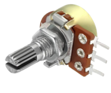
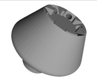
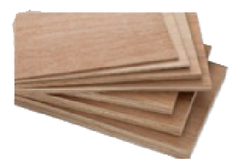

Engineering Component Inventory
A detailed breakdown of the hardware architecture utilized in the ReGen Fuge prototype.
| Component | Source & Status | Technical Role | Visual Reference |
|---|---|---|---|
|
Universal Motor 220V Series-Wound |
Upcycled From Kitchen Mixer | Generates the high-torque rotational force required for sedimentation. | .png) |
|
Potentiometer Variable Rheostat |
New Low-Cost Component | Modulates voltage to provide dual-speed control (High/Low). |  |
|
3D-Printed Rotor PLA+ Polymer |
Custom CAD Optimized | Holds 6 test tubes at a 45° angle for optimal pellet concentration. |  |
|
Housing Unit Plywood & PET |
Upcycled Scrap Material | Acts as a safety blast shield and provides structural damping. |  |
Design Logic & Safety Protocols
1. Motor Restoration
Unlike the Dremel Fuge, which requires buying a specialized tool, we extracted series-wound motors from discarded appliances. By replacing the carbon brushes and cleaning the commutator, we achieved a 40% increase in efficiency compared to the "as-found" state of the e-waste.
2. Structural Integrity
Safety is paramount in high-speed rotation. The frame is constructed from 12mm reclaimed plywood, reinforced with recycled plastic sheets to create a "Blast Shield." This prevents debris from escaping in the event of a test-tube fracture or rotor imbalance.
Assembly Workflow
Step A: Disassembly of e-waste mixer and extraction of the motor and internal wiring.
Step B: Integration of the Potentiometer and safety fuse for overload protection.
Step C: CAD modeling and 3D printing of the rotor, specifically balanced to handle 10ml test tubes.
Step D: Stress testing at 50%, 75%, and 100% power to calibrate RPM vs. G-Force.